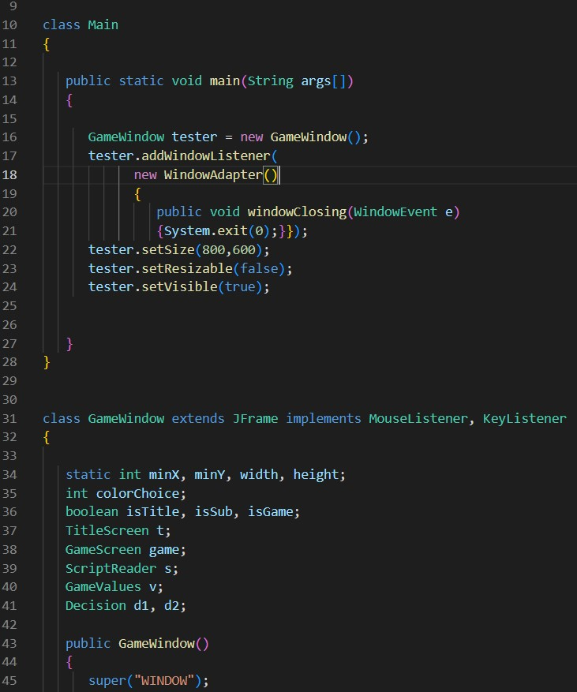

Computer Science
Projects
School Related/Personal
Database

 For this project, I created a database utilizing PHPmyadmin with the idea that the database itself
would be applicable to real-world scenarios such as a Bank or a similar organization's system.
The project saw me demonstrate numerous SQL statements meant to communicate with an independent
website. Essentially, the scenario can be described as follows:
"A bank company is headquartered in a certain town and state, and has multiple branches throughout
the country. Each branch oversees operations over their own customers and employees local to Each
branch. Customers can bank at multiple locations, while each employee is tied to a specific branch.
A customer can also have multiple accounts and multiple loans at one time, with joint ownership of
an account being possible between multiple customers. To change the amount of an account, customers
must complete transactions (intersection data). Active customers are required to have at least one
account open, with no minimum on loans. Employees oversee management of their assigned customer accounts
and bank managers oversee what employee is responsible for which accounts. Branch managers and
employees come in pairs."
For this project, I created a database utilizing PHPmyadmin with the idea that the database itself
would be applicable to real-world scenarios such as a Bank or a similar organization's system.
The project saw me demonstrate numerous SQL statements meant to communicate with an independent
website. Essentially, the scenario can be described as follows:
"A bank company is headquartered in a certain town and state, and has multiple branches throughout
the country. Each branch oversees operations over their own customers and employees local to Each
branch. Customers can bank at multiple locations, while each employee is tied to a specific branch.
A customer can also have multiple accounts and multiple loans at one time, with joint ownership of
an account being possible between multiple customers. To change the amount of an account, customers
must complete transactions (intersection data). Active customers are required to have at least one
account open, with no minimum on loans. Employees oversee management of their assigned customer accounts
and bank managers oversee what employee is responsible for which accounts. Branch managers and
employees come in pairs."
Click this for the fianl project PDF: Bank Database Presentation
Stock Web Scraper

For this project, I created a python script that would act as a stock scraper, collecting data from a finance stock
screener and displaying that data on any given category in real time. The categories include top
gainers/losers, most volatile and/or high volume stocks, etc. The data is then translated then
displayed either in the execution terminal or an excel spreadsheet that allows for updates.
Click this for the GitHub repository: Stock Scraper
COSC 2336: Data Structures and Algorithms
This programming oriented class with an emphasis on C++ included topics such as hash tables, binary search trees, analysis of algorithm efficiency, recursion, queues, stacks, linked lists, as well as address variables.
- Unit 12: Hashing and Dictionaries
- Unit 11: Binary Search Tree and Linked Nodes
- Unit 10: Queues
- Unit 09: Stack Data Structures
- Unit 08: Linked List Data Structures
- Unit 07: Inheritance, Overloading, and Templates
- Unit 06: Analysis of Algorithms
- Unit 05: Searching and Sorting Arrays
- Unit 04: Recursion
- Unit 03: Pointers, Dynamic Variables, and Memory Management
- Unit 02: Structures and Classes
- Unit 01: Functions, Arrays, and Enumerated Types
Automated Happy Birthday Email


During my final year in high school, I created a program in JavaScript that utilized G-Suite, the Google ecosystem, to automatically send a happy birthday email to students and faculty on their birthday. The first iteration I made relied on an initial Google form sent to students that would then prompt users several simple birthday related questions that would then be used to customize a digital greeting card that would be sent on the user's date of birth. A later iteration required users to enter their email into a spreadsheet as a way to opt-in for the birthday email. I unfortunately lost the code while transfering my student account data to my personal computer but the trial and error experience I gained from this project was crucial to me in moving forward with Computer Science and the problem solving process in general.
High School History Game


The very last project I worked on as a high schooler saw me working together with a group of two others to create a Java based, text focused game meant to assist middle school history students affected by COVID. The code relied on numerous classes and functions within those classes to successfully create a working product. The project as a whole taught me the importance of communication within a group setting as well as a great deal about inheritance between classes. The code can still be ran in a Java compiler.
Click this link for the GitHub repository: High School History Game
Weighted/Unweighted GPA Calculator


One of my simpler projects high school projects saw me utilizing Excel spreadsheet functions in order to create a GPA
calculator. It's fairly straight forward with output being given once the user has input grade values
for the classes they entered. A second iteration took class weights into account. I also lost this code
due to an error in data transfer.